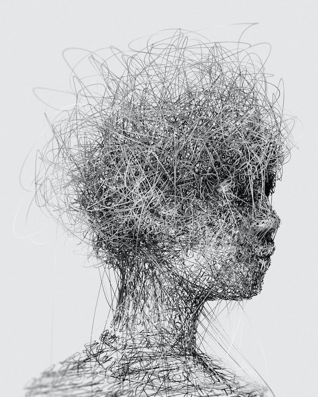

This powerful piece popped out to me when browsing images for topics. The way it was made, and
chosen style,
give this quite simple drawing a sense of brain activity. It puts into perspective how chaotic, yet controlled
and harmonious the erratic thoughts of everyday life can be.